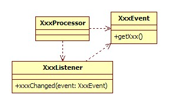

一些设计上的基本常识
http://javatar.iteye.com/blog/706098
最近给团队新人讲了一些设计上的常识，可能会对其它的新人也有些帮助，把暂时想到的几条，先记在这里。
API 与 SPI 分离
框架或组件通常有两类客户，一个是使用者，一个是扩展者。API (Application Programming Interface) 是给使用者用的，而 SPI (Service Provide Interface) 是给扩展者用的。在设计时，尽量把它们隔离开，而不要混在一起。也就是说，使用者是看不到扩展者写的实现的。
比如：一个 Web 框架，它有一个 API 接口叫 Action，里面有个 execute() 方法，是给使用者用来写业务逻辑的。然后，Web 框架有一个 SPI 接口给扩展者控制输出方式，比如用 velocity 模板输出还是用 json 输出等。如果这个 Web 框架使用一个都继承 Action 的 VelocityAction 和一个 JsonAction 做为扩展方式，要用 velocity 模板输出的就继承 VelocityAction，要用 json 输出的就继承 JsonAction，这就是 API 和 SPI 没有分离的反面例子，SPI 接口混在了 API 接口中。

合理的方式是，有一个单独的 Renderer 接口，有 VelocityRenderer 和 JsonRenderer 实现，Web 框架将 Action 的输出转交给 Renderer 接口做渲染输出。

服务域/实体域/会话域分离
任何框架或组件，总会有核心领域模型，比如：Spring 的 Bean，Struts 的 Action，Dubbo 的 Service，Napoli 的 Queue 等等。这个核心领域模型及其组成部分称为实体域，它代表着我们要操作的目标本身。实体域通常是线程安全的，不管是通过不变类，同步状态，或复制的方式。
服务域也就是行为域，它是组件的功能集，同时也负责实体域和会话域的生命周期管理， 比如 Spring 的 ApplicationContext，Dubbo 的 ServiceManager 等。服务域的对象通常会比较重，而且是线程安全的，并以单一实例服务于所有调用。
什么是会话？就是一次交互过程。会话中重要的概念是上下文，什么是上下文？比如我们说：“老地方见”，这里的“老地方”就是上下文信息。为什么说“老地方”对方会知道，因为我们前面定义了“老地方”的具体内容。所以说，上下文通常持有交互过程中的状态变量等。会话对象通常较轻，每次请求都重新创建实例，请求结束后销毁。简而言之：把元信息交由实体域持有，把一次请求中的临时状态由会话域持有，由服务域贯穿整个过程。

在重要的过程上设置拦截接口
如果你要写个远程调用框架，那远程调用的过程应该有一个统一的拦截接口。如果你要写一个 ORM 框架，那至少 SQL 的执行过程，Mapping 过程要有拦截接口；如果你要写一个 Web 框架，那请求的执行过程应该要有拦截接口，等等。没有哪个公用的框架可以 Cover 住所有需求，允许外置行为，是框架的基本扩展方式。这样，如果有人想在远程调用前，验证下令牌，验证下黑白名单，统计下日志；如果有人想在 SQL 执行前加下分页包装，做下数据权限控制，统计下 SQL 执行时间；如果有人想在请求执行前检查下角色，包装下输入输出流，统计下请求量，等等，就可以自行完成，而不用侵入框架内部。拦截接口，通常是把过程本身用一个对象封装起来，传给拦截器链，比如：远程调用主过程为 invoke()，那拦截器接口通常为 invoke(Invocation)，Invocation 对象封装了本来要执行过程的上下文，并且 Invocation 里有一个 invoke() 方法，由拦截器决定什么时候执行，同时，Invocation 也代表拦截器行为本身，这样上一拦截器的 Invocation 其实是包装的下一拦截器的过程，直到最后一个拦截器的 Invocation 是包装的最终的 invoke() 过程；同理，SQL 主过程为 execute()，那拦截器接口通常为 execute(Execution)，原理一样。当然，实现方式可以任意，上面只是举例。

重要的状态的变更发送事件并留出监听接口
这里先要讲一个事件和上面拦截器的区别，拦截器是干预过程的，它是过程的一部分，是基于过程行为的，而事件是基于状态数据的，任何行为改变的相同状态，对事件应该是一致的。事件通常是事后通知，是一个 Callback 接口，方法名通常是过去式的，比如 onChanged()。比如远程调用框架，当网络断开或连上应该发出一个事件，当出现错误也可以考虑发出一个事件，这样外围应用就有可能观察到框架内部的变化，做相应适应。

扩展接口职责尽可能单一，具有可组合性
比如，远程调用框架它的协议是可以替换的。如果只提供一个总的扩展接口，当然可以做到切换协议，但协议支持是可以细分为底层通讯，序列化，动态代理方式等等。如果将接口拆细，正交分解，会更便于扩展者复用已有逻辑，而只是替换某部分实现策略。当然这个分解的粒度需要把握好。
微核插件式，平等对待第三方
大凡发展的比较好的框架，都遵守微核的理念。Eclipse 的微核是 OSGi， Spring 的微核是 BeanFactory，Maven 的微核是 Plexus。通常核心是不应该带有功能性的，而是一个生命周期和集成容器，这样各功能可以通过相同的方式交互及扩展，并且任何功能都可以被替换。如果做不到微核，至少要平等对待第三方，即原作者能实现的功能，扩展者应该可以通过扩展的方式全部做到。原作者要把自己也当作扩展者，这样才能保证框架的可持续性及由内向外的稳定性。
不要控制外部对象的生命周期
比如上面说的 Action 使用接口和 Renderer 扩展接口。框架如果让使用者或扩展者把 Action 或 Renderer 实现类的类名或类元信息报上来，然后在内部通过反射 newInstance() 创建一个实例，这样框架就控制了 Action 或 Renderer 实现类的生命周期，Action 或 Renderer 的生老病死，框架都自己做了，外部扩展或集成都无能为力。好的办法是让使用者或扩展者把 Action 或 Renderer 实现类的实例报上来，框架只是使用这些实例，这些对象是怎么创建的，怎么销毁的，都和框架无关，框架最多提供工具类辅助管理，而不是绝对控制。
可配置一定可编程，并保持友好的 CoC 约定
因为使用环境的不确定因素很多，框架总会有一些配置，一般都会到 classpath 直扫某个指定名称的配置，或者启动时允许指定配置路径。做为一个通用框架，应该做到凡是能配置文件做的一定要能通过编程方式进行，否则当使用者需要将你的框架与另一个框架集成时就会带来很多不必要的麻烦。
另外，尽可能做一个标准约定，如果用户按某种约定做事时，就不需要该配置项。比如：配置模板位置，你可以约定，如果放在 templates 目录下就不用配了，如果你想换个目录，就配置下。
区分命令与查询，明确前置条件与后置条件
这个是契约式设计的一部分，尽量遵守有返回值的方法是查询方法，void 返回的方法是命令。查询方法通常是幂等性的，无副作用的，也就是不改变任何状态，调 n 次结果都是一样的，比如 get 某个属性值，或查询一条数据库记录。命令是指有副作用的，也就是会修改状态，比如 set 某个值，或 update 某条数据库记录。如果你的方法即做了修改状态的操作，又做了查询返回，如果可能，将其拆成写读分离的两个方法，比如：User deleteUser(id)，删除用户并返回被删除的用户，考虑改为 getUser() 和 void 的 deleteUser()。 另外，每个方法都尽量前置断言传入参数的合法性，后置断言返回结果的合法性，并文档化。